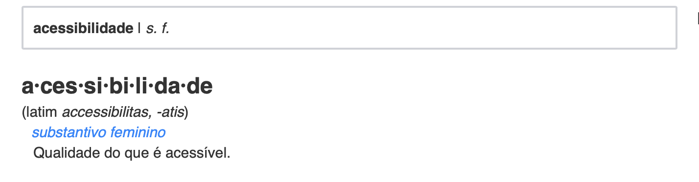
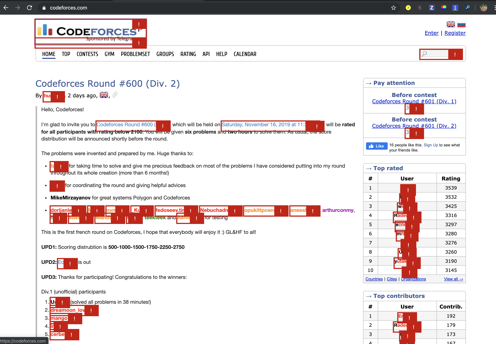
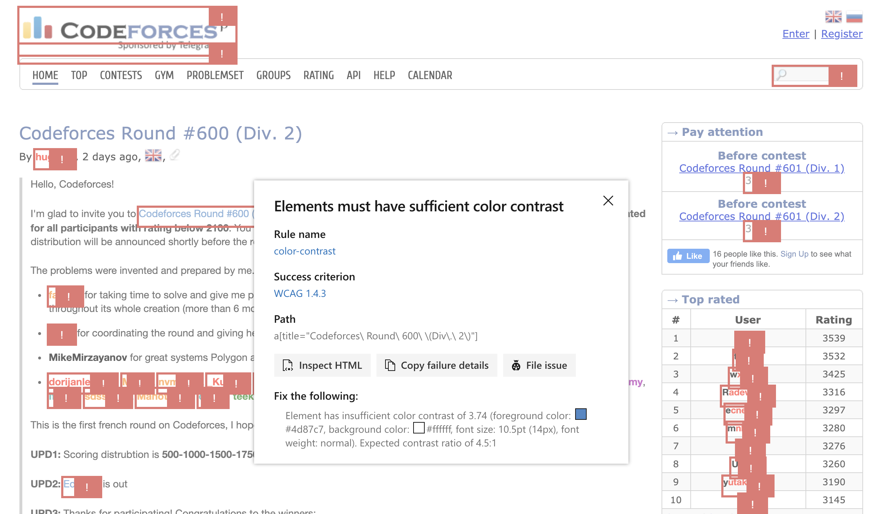
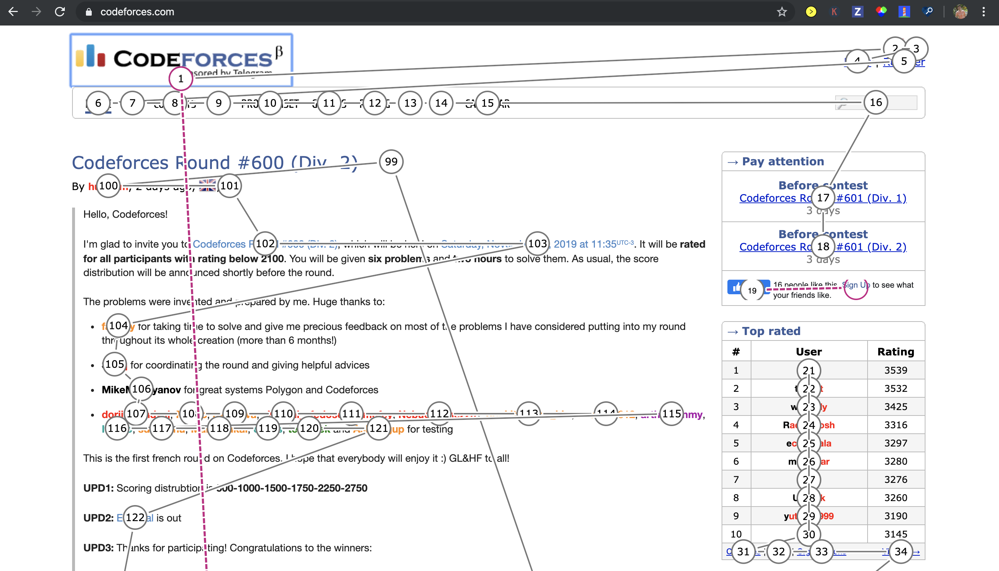
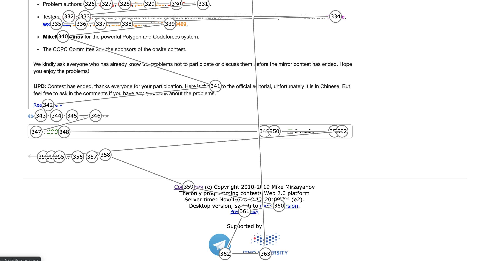

Acessibilidade na interação humano-computador
Autor: Erick GiffoniO que é acessibilidade ? Uma definição do Dicionário Priberam

Ok... e o que é acessível ?

Hmmmm... e como isso se aplica na interação humano-computador ?
Percebe-se que acessibilidade é uma qualidade, ou seja, é um atributo, uma característica do que é acessível, ou seja, daquilo a que se pode chegar. Assim, para IHC, acessibilidade está relacionado à facilidade de uso, à usabilidade do site e à experiência de todo e de qualquer usuário. O website, nesse contexto, deve atender à um conjunto de princípios ou de normas para que deficiências de visão, ou de coordenação motora, ou de audição, ou qualquer outra não sejam um empecilho para que o usuário consiga navegar no site.
Objetivos da avaliação de acessibilidade
-
Pontuar os acertos do Codeforces em relação à acessibilidade ;
-
Encontrar os pontos negativos (as falhas) do Codeforces em relação à acessibilidade ;
-
Consolidar os resultados encontrados para propor melhorias ao Codeforces.
Sobre o padrão W3C
The World Wide Web Consortium, mais conhecido como W3C, é uma comunidade internacional que trabalha com o desenvolvimento de padrões para a web.
(Adaptado de About W3C).
Nesse sentido, como parte da Web Accessibility Initiative, WAI, essa comunidade desenvolveu um conjunto de orientações para construir conteúdos na web de maneira acessível. Essas orientações são chamadas de Web Content Accessibility Guidelines (WCAG).
Web Content Accessibility Guidelines (WCAG) 2.0 defines how to make Web content more accessible to people with disabilities. Accessibility involves a wide range of disabilities, including visual, auditory, physical, speech, cognitive, language, learning, and neurological disabilities. Although these guidelines cover a wide range of issues, they are not able to address the needs of people with all types, degrees, and combinations of disability. These guidelines also make Web content more usable by older individuals with changing abilities due to aging and often improve usability for users in general.
(Adaptado de Web Content Accessibility Guidelines (WCAG) 2.0)
De maneira prática e objetiva, o WCAG 2.0 define algumas camadas de orientação para que os indivíduos e as organizações que seguem essas orientações sejam atendidos. Essas camadas são as seguintes :
-
Principles : existem 4 (quatro) princípios que fornecem a base para a acessibilidade na web :
-
Perceivable : As informações e os componentes da interface do usuário devem ser apresentados aos usuários de maneira que eles os possam perceber ;
-
Operable : os componentes da interface do usuário devem estar operáveis ;
-
Understandable : As informações e o funcionamento da interface do usuário devem ser compreensíveis ;
-
Robust : O conteúdo deve ser robusto o suficiente para que possa ser interpretado de maneira confiável por uma ampla variedade de usuários, incluindo tecnologias de assistência.
-
-
Guidelines : existem 12 (doze) orientações, abaixo dos princípios, que promovem as metas básicas para que o conteúdo na web seja mais acessível para usuários com diferentes deficiências ;
-
Success criteria : para cada guideline (orientação) existem critérios de sucesso testáveis que seguem uma ordem de conformidade : A (mais baixo), AA, AAA (mais alto). Saiba mais em Understanding Levels of Conformance.
-
Sufficient and Advisory Techniques : para cada guideline e success criteria existe uma série de técnicas. Saiba mais em Understanding Techniques for WCAG Success Criteria.
Avaliação do CodeForces usando a ferramenta Accessibility Insights for Web - Microsoft
Accessibility Insights for Web é uma extensão para o Google Chrome e para o Microsoft Edge Insider que ajuda desenvolvedores a encontrar e a melhorar os problemas de acessibilidade nos aplicativos e nos sites da web.
Essa ferramenta suporta 2 (dois) principais cenários :
-
FastPass : é um processo leve, de 2 (dois) passos, que ajuda a identificar problemas comuns e de alto impacto em relação à acessibilidade em menos de 5 (cinco) minutos.
-
Automated checks : a ferramenta verifica automaticamente a conformidade com aproximadamente 50 requisitos de acessibilidade ;
-
Tab stops : a ferramenta permite identificar problemas críticos relacionados ao acesso via teclado por meio de instruções claras e de um auxiliador visual .
-
-
Assessment : permite que qualquer pessoa com habilidades HTML verifique se o web site atende aos padrões estabelecidos pelo Web Content Accessibility Guidelines (WCAG) 2.1 Level AA.
-
Automated checks : a ferramenta verifica automaticamente a conformidade com aproximadamente 50 requisitos de acessibilidade ;
-
Manual tests : a ferramenta oferece instruções passo a passo, exemplos e orientações sobre como corrigir o erro encontrado para diversos tipos de testes. Muitos desses são assistidos, o que significa que a ferramenta identifica as instâncias de teste ou fornece um auxiliar visual.
-
O modelo adotado para avaliar o Codeforces foi o FastPass
Com relação aos Automated checks, as imagens abaixo ilustram como é feita a avaliação :

A ferramenta percorre toda a página e identifica em vermelho os erros encontrados. É possível clicar no erro e obter mais informações, como ilustra a imagem a seguir :

Assim é possível analisar qual regra foi violada, qual o critério de sucesso dessa regra, bem como a sugestão de correção desse erro etc.
Com relação aos Tab stops, as imagens abaixo ilustram como é feita a avaliação :
Screenshot do topo da página inicial
Screenshot do final da página inicial
Total de tab stops na página inicial do Codeforces : 363.
Conclui-se que, em relação aos tab stops, a página inicial do Codeforces torna-se muito complicada de se acessar para usuários dependentes da navegação via teclado, por conta da grande quantidade de tabs necessária para percorrer toda a página.
A tabela a seguir reune os principais erros encontrados nessa análise :
| Tipo do erro | Descrição do erro | Informações relevantes | Quantidade de ocorrências |
|---|---|---|---|
| color-contrast | Ensures the contrast between foreground and background colors meets WCAG 2 AA contrast ratio thresholds | - More information about color-contrast- WCAG 1.4.3 | 175 |
| image-alt | Ensures |
- More information about image-alt- WCAG 1.1.1 | 11 |
| label | Ensures every form element has a label | - More information about label- WCAG 1.3.1- WCAG 3.3.2 | 1 |
| link-name | Ensures links have discernible text | - More information about link-name- WCAG 2.4.4- WCAG 4.1.2 | 1 |
| list | Ensures that lists are structured correctly | - More information about list- WCAG 1.3.1 | 1 |
Total de erros encontrados : 189.
Clique aqui para visualizar a avaliação completa feita pela ferramenta da Microsoft.
Referências
[1] Web Content Accessibility Guidelines (WCAG) 2.0
[2] Accessibility Fundamentals
[3] Web Accessibility Evaluation Tools List
[4] Essential Components of Web Accessibility
[5] W3C Accessibility Standards Overview
[7] Easy Checks – a First Review of Web Accessibility
[9] How to Meet WCAG (quick reference)
[10] Web Accessibility Tutorials
[11] Dicionário Priberam
[12] Accessibility Insights for Web
Versionamento de edições desta página
| Data | Autor | Descrição | Versão |
|---|---|---|---|
| 13/11/2019 | Erick Giffoni | Criação da página | 0.1 |
| 13/11/2019 | Erick Giffoni | Adição das referências | 0.1.2 |
| 16/11/2019 | Erick Giffoni | Adição dos objetivos da avaliação de acessibilidade | 0.2 |
| 17/11/2019 | Erick Giffoni | Finalização da avaliação em conformidade WCAG | 1.0 |